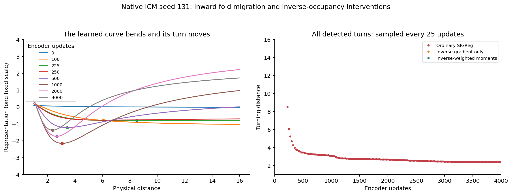
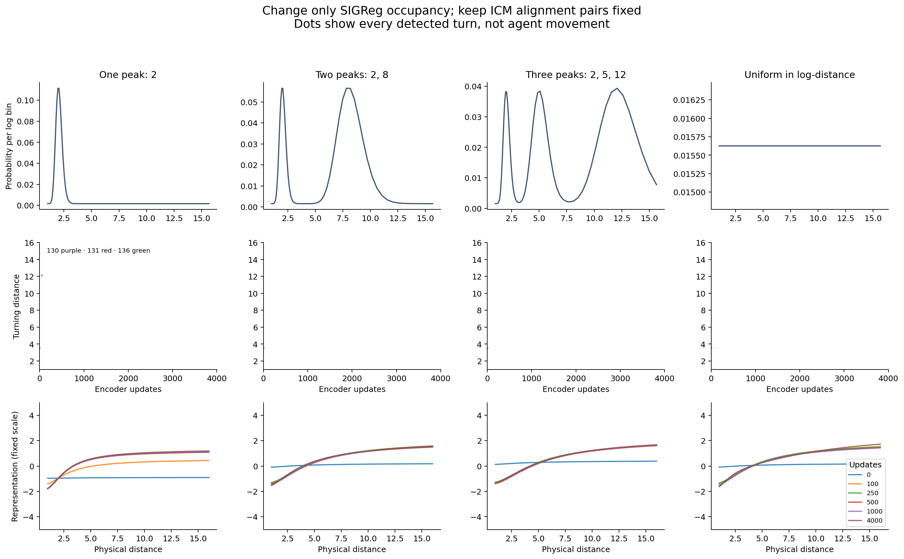
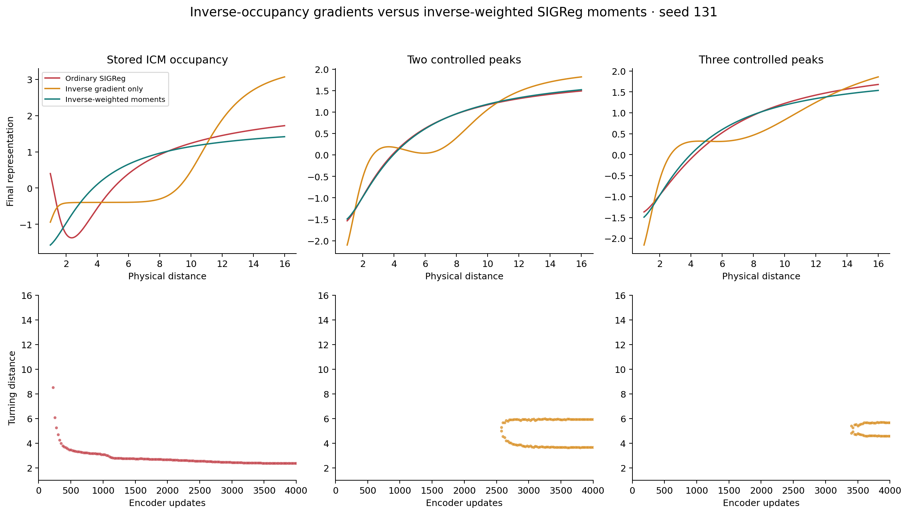
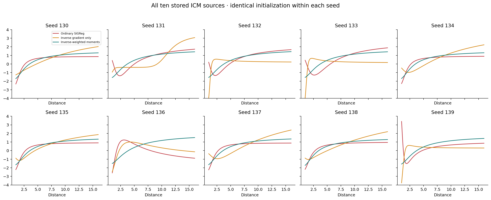
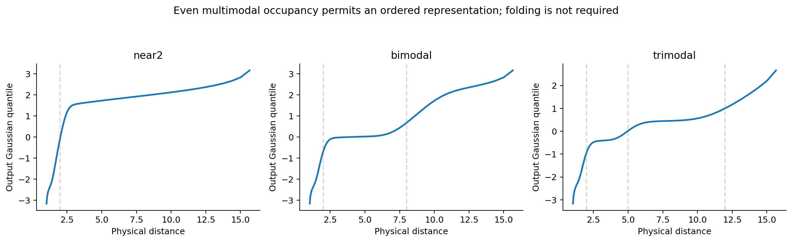
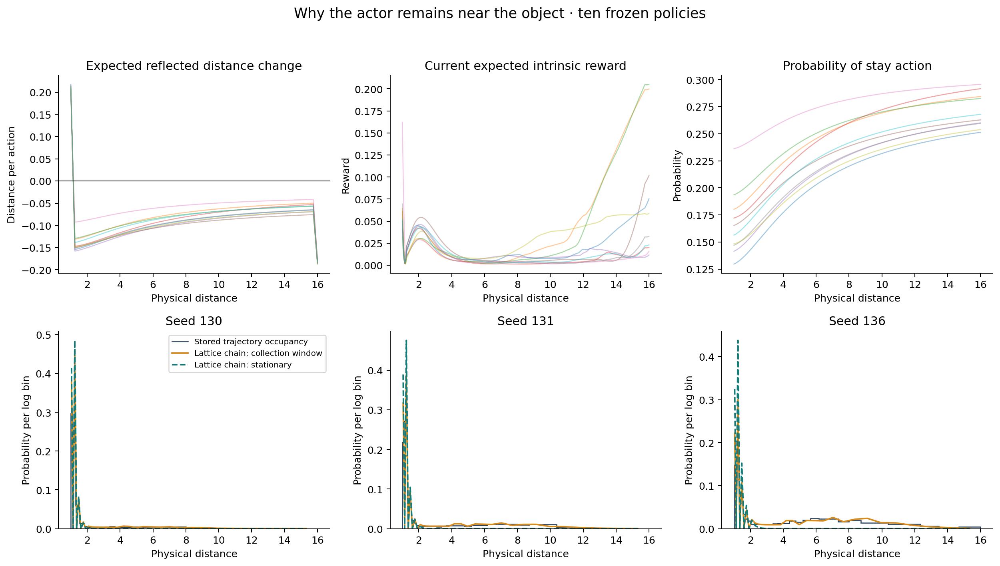
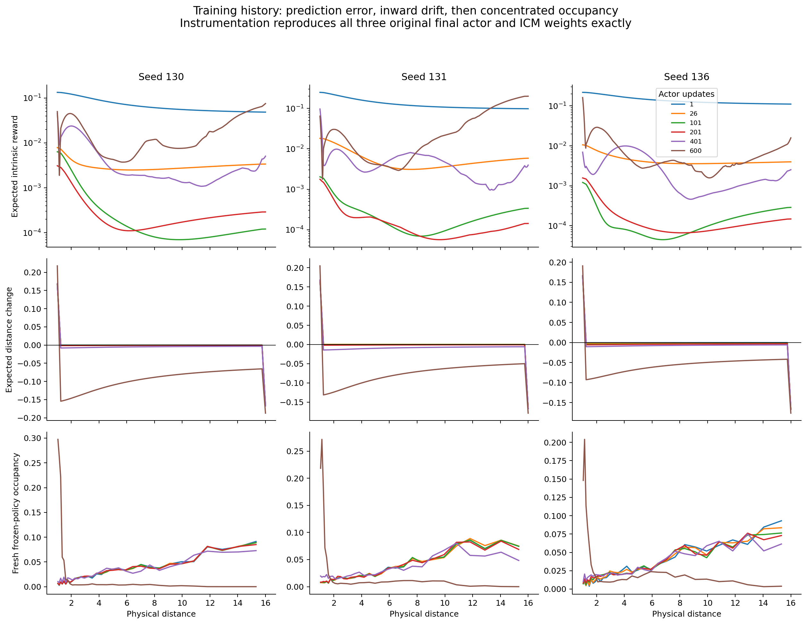

Occupancy, SIGReg gradients, and ICM attraction
native inward migration

occupancy and fold motion

inverse occupancy comparison

all native runs

monotone gaussianization

policy attraction

policy training history
